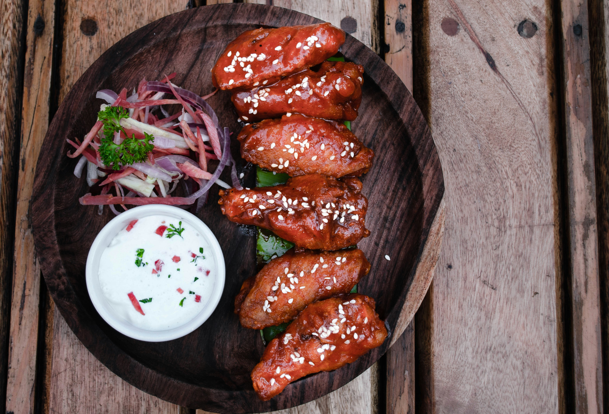
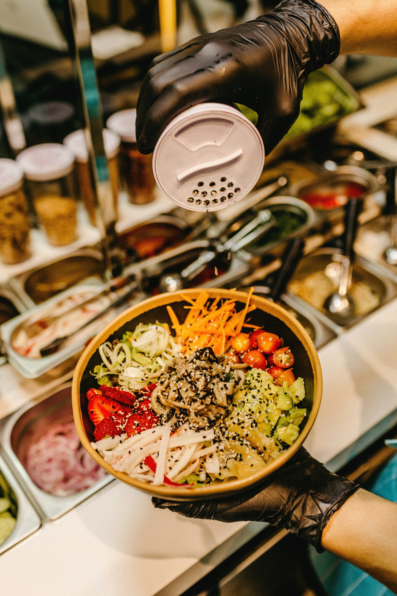

Mission
“Our mission is to delight our customers with delicious, wholesome meals that nourish their bodies. We offer
all your favorite dishes cooked with healthy alternatives. We strive to create a positive dining experience
that promotes health,well-being and long-term happiness.”
Vision
“To be the go-to destination for health-conscious individuals seeking flavorful, nutritious food. We envision
a community where people prioritize their well-being without compromising on taste, and where our restaurant
plays a central role in fostering healthier lifestyles.”

- 
Meet Our Dedicated Staff
Our team is the heart of our restaurant. From our talented chefs who whip up culinary magic to our friendly
servers who make every visit memorable, each staff member plays a crucial role:
- Chefs:
- Passionate about flavor and nutrition, our chefs create dishes that are both delicious and healthful.

- Servers:
- Our servers are more than just order-takers; they’re ambassadors of wellness. They’ll guide you through
the menu, answer your questions, and ensure your dining experience is exceptional.
- Nutrition Educators:
- Yes, we consider ourselves educators too! Our staff loves sharing insights about ingredients, cooking
techniques, and how certain foods benefit your body.
- Community Builders:
- We believe that food brings people together. Our staff fosters a warm, welcoming environment where
friendships can flourish over a shared meal.


- Feel The Authentic & Original Taste from us.
Come and Visit us, Let’s celebrate health, happiness, and good food together at our vibrant restaurant!